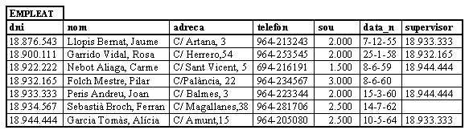
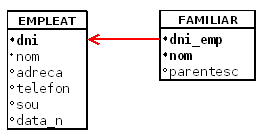

3.2.5 Integritat referencial
Per poder explicar-la ens recolzarem en un exemple.

que es podria traduir en les següents taules:

Si en una taula R2 (Familiar) tenim un atribut (dni_emp) que és clau (primària o candidata) d'una altra taula R1 (Empleat-- > dni), tot valor d'aquell atribut ha de concordar amb un valor de la clau de R1 (no he de poder posar en familiar un Dni que no el tinga cap empleat de l'empresa). L'atribut en R2 és, per tant, una CLAU EXTERNA.
Ha de ser impossible posar en Familiar el Dni 18.754.321, perquè no està en l'altra, i per tant no és un Dni d'un empleat de l'empresa.
Les relacions R1 i R2 no tenen per què ser distintes, poden ser la mateixa. Així, si considerem el supervisor, aquest ha de ser de l'empresa:

Supervisor és una clau externa, però de la mateixa taula. No tots els SGBD permeten una clau externa reflexiva.
Una manera de representar les claus externes en l'esquema és la següent:

On el doble subratllat indica una clau externa (que en aquest exemple, a més, forma part de la clau principal, però que no sempre serà així) que “apunta” a la clau principal de l’altra taula.
L'altra manera, utilitzant la forma alternativa, serà aquesta, que també és molt fàcil d'entendre:

Açò ens impedirà que introduïm valors no correctes, no existents. ¿Però què passarà si esborrem un empleat, o si modifiquem el seu Dni? ¿Què fem amb els familiars? Doncs en principi tres podrien ser les accions a realitzar, i depenent de la situació particular triaríem una o una altra:
-
No deixar esborrar-lo o modificar-lo (NO ACTION).
Segurament no és l'opció més adequada per a l'exemple dels empleats i els familiars. Però pensem en un altre exemple, amb clients i factures. Què fem si s'esborra un client i tenim factures d'ell? Segurament el més adequat serà no fer l'acció, és a dir, no esborrar el client (sobretot si les factures estan pendentes de cobrar ...). -
Esborrar també els familiars o canviar-los en cascada(CASCADE).
Segurament aquesta és l'opció més adequada per al cas dels familiars, que s'eliminen automàticament. -
Canviar el valor de la clau externa al valor nul o un valor predeterminat (SET NULL o SET DEFAULT).
En l'exemple dels familiars no té sentit ja que no ens interessen els familiars dels que no són de l'empresa. Però imaginem, per exemple, un proveïdor que ens ha proporcionat uns articles. Pel fet de no treballar ja amb el proveïdor i llevar-lo de la B.D. no hauríem d'eliminar els articles. Seria suficient amb donar un valor nul al proveïdor d'aquest article[1].
Hi ha SGBD que fins i tot permeten accions distintes per al cas d'esborrament i d'actualització de la clau, com per exemple Access.
En Access les restriccions d'integritat (claus externes) es defineixen amb les relacions entre taules. El següent vídeo mostra com crear la clau externa de Familiar cap a Empleat, i es pot observar com la manera de representar-lo és molt pareguda a la forma alternativa que estem utilitzant.
Hem d'assegurar-nos sobretot que la tala principal està a l'esquerra en a imatge 5, i que l'altra està a la dreta marcada com "taula relacionada".
I aquest seria la manera de fer-ho en Base de LibreOffice , totalment paral·lela, però millor arrastrar al revès, de la relacionada a la principal
[1]Observem, però, que aquesta clau externa hauria d'admetre valors nuls. Si no ho permet, millor un valor per defecte.
Llicenciat sota la Llicència Creative Commons Reconeixement NoComercial CompartirIgual 3.0